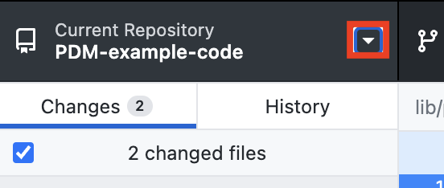

For every practical we will be using GitHub classroom to accept assignments and download the repository. This will allow you to get use to the workflow of using GitHub while also getting quick access to the work for each session. It also provides you with an easy way to backup your work.
- Find the GitHub Classroom link on the VLE (it will be at the top of each practical page)
- Click the link and accept the assignment.
- The practical will now be added to your GitHub account.
Clone a Practical
To download the accepted assignment we need to clone it using GitHub Desktop.
- Click the little triangle next to the repository name.
 - Click the Add button then select "Clone Repository".

- In the popup window, select the first tab, "GitHub.com". Look for the assignment's repository name in the list. If
you don't see it, click the refresh button to update the list.

- The repository is now on your computer, open Visual Studio Code and complete the exercises.